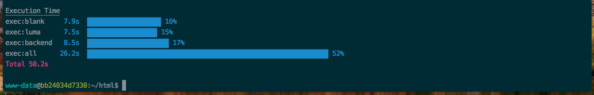

How to config Grunt on Magento 2
Just 5 steps, you can config Grunt
1) From the Magento_root directory, copy and paste the contents of the following files:
1 2 3 | |
2) Install Grunt Cli
Inside the container, run the following command in a command prompt:
1 | |
After that install npm and grunt.
1 2 | |
3) Modify file grunt-config.json like that:
1 2 3 | |
4) Config theme in file dev/tools/grunt/configs/themes.js
by default you have luma, and you can use example to add warp
Example path: app/design/frontend/WarpTheme/default
1 2 3 4 5 6 7 8 9 10 | |
5) Ready!!, every time we need to compile content, we run console:
1 2 | |
After that, you can see:

Grunt commands
The following table describes the grunt commands you can use to perform different customization tasks. Run all commands from your Magento installation directory.
| Grunt task | Action |
|---|---|
| warp grunt clean | Removes the theme related static files in the pub/static and var directories. |
| warp grunt exec | Republishes symlinks to the source files to the pub/static/frontend/ directory. Use warp grunt exec:<theme> to republish symlinks for a specific theme. |
| warp grunt less | Compiles CSS files using the symlinks published in the pub/static/frontend/ directory. Use warp grunt less:<theme> to use the symlinks published for a specific theme. |
| warp grunt watch | Tracks the changes in the source files, recompiles .css files, and reloads the page in the browser. |